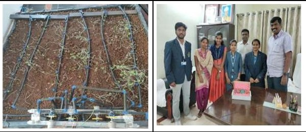
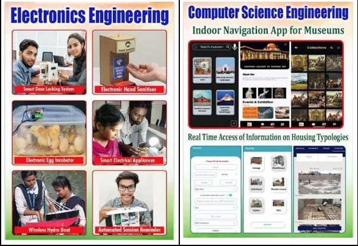

Research Outreach for Societal Advancement
Developed technology transfer and consultancy projects - including electronic egg incubator, to Gorapalli Village Panchayat, Pendurthi Mandal, Visakhapatnam. Organised technical awareness camps in the village to apprise farmers of the use of technology in farming and other applications.
I was instrumental in incubating start-up ideas in electronic and computer science applications: smart egg incubator, IoT smart home appliances, smart sanitiser, Android App development for museums touring and smart real estate. A few ideas are under consideration by Hobel Bellows Pvt. Ltd., Visakhapatnam for potential investment. The smart electronic egg incubator we have developed has been donated to Gorapalli Village Development Office, Pendurthi, Visakhapatnam. The incubators are still in use by the local farmers.
Projects and Their Impact:
| S.No. | Project | Impact |
|---|---|---|
| 1 | Automated drip irrigation system | Prototype developed and passed to semifinals in AICTE India Innovation Contest 2019. [cite: 132] |
| 2 | Smart electrical appliances | Donated to Gorapalli Village Panchayat. [cite: 132] |
| 3 | Smart door locking system | Installed in WISTM college. [cite: 133] |
| 4 | Smart surveillance robot | Installed in WISTM college. [cite: 134] |
| 5 | Electronic autonomous parking system | Installed in WISTM college. [cite: 134] |
| 6 | Smart notice board | Installed in WISTM college. [cite: 135] |
| 7 | Smart session reminder | Installed in WISTM college. [cite: 135] |
| 8 | Solar powered chemical sprayer | Donated to Gorapalli Village Panchayat. [cite: 136] |
| 9 | Electronic egg incubator | Donated to Gorapalli Village Panchayat. [cite: 136] |
| 10 | Polyhouse using IoT | Prototype developed. [cite: 137] |
Automated Drip Irrigation System:
The drip irrigation system currently operational in India requires farmers to manually release and stop water from pipes to the farm consequently, burdening the farmers to an extent of Rs 1,00,000 (one lac Indian rupees). We developed a novel automated drip system using IoT technology with an arrangement of the valves and pipes that is optimal in water usage and manpower requirement. The proposed system lets the water be utilised more optimally and relieves the farmer of around 90% of the additional monitoring costs. We have been awarded USD400 by Texas instruments to develop a prototype.
Our research contribution to society has been published in media.
Development of the automated drip irrigation system (first). Won USD400 worth equipment from Texas instruments to implement the design (second).
My contribution to the development of start-up ideas for human advancement and smart living (also the appreciation letter from the Gorapalli village development officer)
Coordinated the organisation and presentation of nearly 10 startup ideas from students of computer science and engineering, electronics, and mechanical engineering at the meet.
Students presenting their ideas.
Praveen Choppala with Dipan Sahu of AICTE